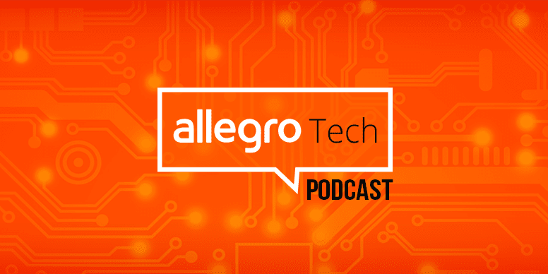

The Seven Deadly Sins of Test Automation
I’ve spent a significant part of my career building and maintaining test automation suites, and I’ve learned one thing for certain: a test suite that…
przejdź do wpisuAllegro is one of the most technologically advanced companies in our part of Europe. Allegro is also over 2300 IT specialists of various specializations, developing our e-commerce platform. The unique scale and complexity of the problems that we solve on a daily basis give us the opportunity to work on a wide variety of projects. Allegro Tech is a place where our engineers share knowledge and case studies from selected projects in the company – in the form of articles, podcasts and events.
I’ve spent a significant part of my career building and maintaining test automation suites, and I’ve learned one thing for certain: a test suite that…
przejdź do wpisuAre you looking for a way to extend the capabilities of LLMs with your own tools? Wondering how to run an MCP (Model Context Protocol)…
przejdź do wpisuEven the strongest safety properties implemented in today’s top databases are not enough to prevent data loss or corruption in all scenarios. We have learned…
przejdź do wpisuDisclaimer: Written by Human Intelligence. Human Intelligence can make mistakes, including about people, so double-check it.…
przejdź do wpisu
Jak definiujemy dług techniczny w Allegro, skąd się bierze i jak go mierzymy?Kto w Allegro zarządza długiem technicznym i jak działa proces, który na to pozwala?Czym są Health Checker i Allegro Tech Radar oraz jak wspierają nas w pracy z tym...
Posłuchaj odcinkaJak doszło do integracji rozwiązań ads & search na Allegro - przełomowej zmiany, która wymyka się branżowym benchmarkom?Czym jest Prawo Conwaya i jak zadziałało w przypadku tej integracji w praktyce?Na czym polega projekt SOMBRERO (Sponsored Offers...
Posłuchaj odcinkaJak, gdzie i od kiedy korzystamy ze sztucznej inteligencji w Allegro?Co dobrze wiedzieć o uczeniu maszynowym i o AI generatywnym w naszej firmie?Co wspólnego z AI ma koncepcja maszyny vendingowej?Jakich 6 elementów jest kluczowych dla dobrego...
Posłuchaj odcinkaJak się przebranżowić i rozpocząć pracę w IT?Od czego zacząć, na co postawić, gdzie szukać wiedzy? Skoczyć na głęboką wodę, czy działać metodą małych kroków?Jak znaleźć w sobie odwagę i ciekawość oraz gdzie szukać wsparcia w procesie zmiany...
Posłuchaj odcinka